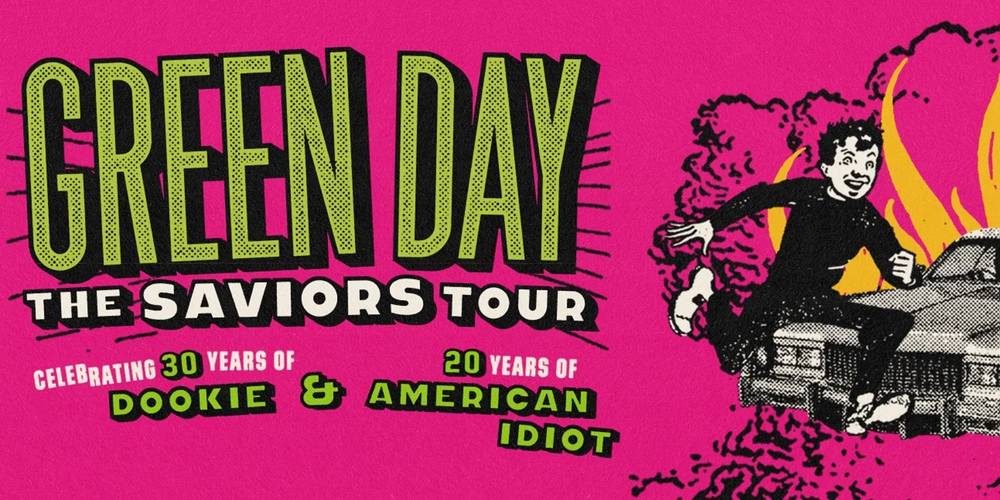

Pittsburgh, PNC Park
September 1st, 2024
This concert and Tyler the Creator are constantly battling between my favorite concerts.
Just so unbelievably fun.
This is the setlist for the show that I saw.
- The American Dream is Killing Me
- Burnout
- Having a Blast
- Chump
- Longview
- Welcome to Paradise
- Pulling Teeth
- Basket Case
- She
- Sassafras Roots
- When I Come Around
- Coming Clean
- Emenius Sleepus
- In the End
- F.O.D.
- All by Myself
- Know Your Enemy
- Look Ma, No Brains!
- One Eyed Bastard
- Dilemma
- Minority
- Brain Stew
- American Idiot
- Jesus of Suburbia
- Holiday
- Boulevard of Broken Dreams
- Are We the Waiting
- St. Jimmy
- Give Me Novacaine
- She's a Rebel
- Extraordinary Girl
- Letterbomb
- Wake Me Up When September Ends
- Homecoming
- Whatsername
- Bobby Sox
- Good Riddance (Time of Your Life)
If you would like to see a more in depth version of the whole show vist setlist.fm
Openers
The Linda Lindas
They were pretty cool. I missed like the first two songs because I was in a long merch
line but I still included them.
- Too Many Things
- Growing Up
- Resolution/Revolution
- Excuse Me
- All in My Head
- Oh!
- Racist, Sexist Boy
Rancid
Not my favorite band in the world but cool to see still.
- Maxwell Murder
- Roots Radicals
- Side Kick
- Tomorrow Never Comes
- The 11th Hour
- Ghost of a Chance
- Radio
- Something in the World Today
- Fall Back Down
- Time Bomb
- Ruby Soho
The Smashing Pumpkins
It felt really weird watching the band that I last saw as a headliner be an opener. But I
saw some songs that I didn't see before so that was cool.
- The Everlasting Gaze
- Doomsday Clock
- Zoo Station
- Today
- That Which Animates the Spirit
- Tonight, Tonight
- Ava Adore
- Disarm
- Bullet With Butterfly Wings
- Sighommi
- 1979
- Jellybelly
- Cherub Rock
- Zero